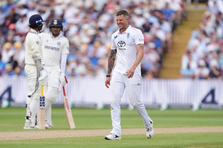

The sun shone, the wind blew, the grass grew, and India batted. And batted. And batted. They batted on so long that summer’s roses had budded, bloomed and withered again before they were finished. Excited little kids who had taken seats in the family stand first thing in the morning left it as jaded pensioners in the evening.
It was even rumoured that a man who had come up from London to catch the end of the innings was able to use the newly finished HS2. Among all their other achievements India’s batsmen even silenced the Barmy Army, so that by the very end the volume in the Hollies Stand was reduced to the sort of somnolent hum usually heard at Lord’s.
England’s bowlers visibly aged too as the innings went on. Brydon Carse seemed to only have one working leg by the time it was over, Chris Woakes, who bowled only seven overs on day two, all of them first thing in the morning, had apparently slipped quietly into retirement while no one was looking, and even Ben Stokes gave up flagellating himself. Among the quicks only Josh Tongue was still going, rolling in from the pavilion end like some decrepit trebuchet being wheeled up to hurl boulders at the walls of Harlech castle in the seventh year of the siege.
At the other end, Shoaib Bashir bowled more overs in this one innings than he has done in all his last 12 months for Somerset.
Time was when a lot of Test cricket was played at this sort of tempo, but it’s been a while since we’ve a seen a game like it in England and, unless you’ve had the misfortune to be following the last couple of rounds of the County Championship, it takes some readjusting to get used to the slower rhythm.
Before this series, we hadn’t even had a five-day game since the Ashes back in 2023. India’s was the longest team innings anyone has played against England in this country since Stokes took over as captain. You have to go all the way back to 2014, and the first Test against a very different iteration of the India team, to find one that went on longer.
It’s been coming. England’s attack looked pretty thin for stretches of both the Tests they have already played this season. And in these conditions it was left absolutely threadbare. They are partly to blame themselves. They had boundary ropes brought in tight, and Stokes said before the game that England have asked the groundstaff to produce these pitches for them, although he must have hoped for one with a bit more “bounce and carry”, as he put it, than an abandoned mattress that’s been left on the corner in the rain then peed on by the neighbourhood strays.
Brydon Carse was not the only bowler to struggle against India’s long game.Photograph: Martin Rickett/PA
Edgbaston’s head groundsman, Gary Barwell, posted an insistent message on X before the match talking about how few draws there have been here recently, which made him sound like John Cleese’s pet-shop keeper in the dead parrot sketch.
In the past, Stokes has been able to find a way to conjure the wickets regardless. He tried here, there were umbrella fields, with five men arrayed in a rainbow behind the wicket, and wall fields, with five in a line from mid-off to mid-on.
Harry Brook got to show off his medium pace, delivered from a full run, and his off-spin, delivered from a three-step one, and even alternated between them from one ball to the next. But the pitch was unforgiving, and India’s batsmen so pitilessly committed to their strategy that even the No 9, Akash Deep, who came in when the score was 574, got a quick lecture from his captain on batting responsibly after he had played and missed at a delivery.
There is an undeniable logic to it ( despite, ahem, the impression eager Guardian readers have got from Thursday’s edition ). Stokes’s England like to play the game at such a lick that they give the opposition a lot of time to work with, and India have decided to use it to try to bat them out of the match.
The question for them is whether they have enough bowling to take 20 wickets on this pitch themselves given the way they had sandbagged their middle order with all-rounders. The key confrontation in the game may yet turn out to be between England and their own public insistence that they would rather lose a game by trying to win it than play for a draw.